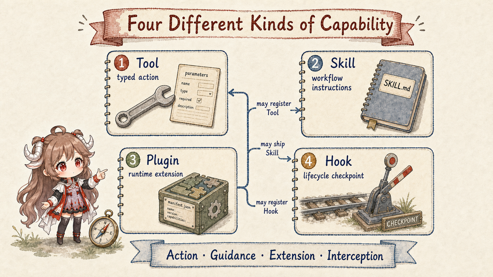
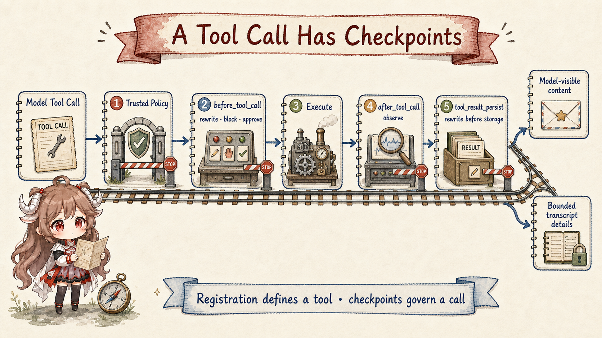

仍然从一个具体故障开始。Alice 安装了一个 GitHub 插件，配置里也能看到 enabled；可 Agent 说“我没有这个工具”。另一台机器上工具出现了，调用时又被 hook 拦住。第三个环境里工具能执行，但模型根本不知道项目要求先跑测试。三个现象分别落在 discovery/exposure、call admission 和 workflow guidance，不应该用同一个“插件坏了”解释。
OpenClaw 的能力系统之所以显得复杂，是因为它拒绝把四类东西混在一起：tool 是可执行的 typed action，skill 是给模型读的工作说明，plugin 是向 runtime 注册能力的代码包，hook 是运行过程中的检查点。把它们分层之后，安装、发现、展示、调用、授权和审计才能各自有明确 owner。
阅读契约。读完后你应该能沿着源码回答：一轮 Agent 的 tool list 来自哪里；plugin manifest 与 live registration 各证明什么；optional tool 为什么需要 opt-in；skill precedence、eligibility 与 snapshot 如何配合；tool policy 在什么时候把工具从 schema 中移除；以及 before_tool_call、after_tool_call、tool_result_persist 分别能改变什么。
证据边界。本文继续固定在 c549250。能力面在这个项目里迭代很快，尤其是 Tool Search、Code Mode 与 plugin contracts；本文只使用这份快照的源码与对应文档，不把旧版只有 registerHook 的扩展模型混进 typed api.on(...) 路径。
一、先分清 Tool、Skill、Plugin、Hook

| 概念 | 模型/运行时得到什么 | 它不负责什么 |
|---|---|---|
| Tool | 名称、描述、参数 schema 与 execute 实现。 | 不自动告诉模型完整业务流程。 |
| Skill | 何时使用能力、怎样组合步骤的说明书。 | 不创建底层工具，也不绕过 policy。 |
| Plugin | 可安装代码、manifest、配置与注册入口。 | enabled 不等于每个注册工具对每轮都可见。 |
| Hook | prompt、tool、message、session 等生命周期检查点。 | 不是独立的 tool catalog，也不应靠副作用假装有顺序。 |
一个 plugin 可以同时注册 tool、携带 skill、接入 channel/provider 并安装 typed hook；一个 skill 也可以指导模型组合多个 core/plugin tool。但箭头不能倒过来：读到一份 SKILL.md 不会使被 policy 删除的 exec 重新出现，注册一个 hook 也不会自动给模型增加函数 schema。
二、Tool 的最小合同是 descriptor 加 execute
模型调用的不是任意 JavaScript 函数，而是一个有名字、说明和参数 schema 的 descriptor。runtime 用同一名字在模型输出与本地实现之间对齐，参数在执行前按 schema 验证。plugin tool 还可以声明 outputSchema，约束结构化 details，供 Tool Search 或 Code Mode 消费。
api.registerTool({
name: "workflow_tool",
description: "Run one named workflow",
parameters: Type.Object({ pipeline: Type.String() }),
outputSchema: Type.Object(
{ pipeline: Type.String() },
{ additionalProperties: false },
),
async execute(_id, params) {
return {
content: [{ type: "text", text: params.pipeline }],
details: { pipeline: params.pipeline },
};
},
});content 是给模型继续推理的结果，details 更像 UI、诊断和结构化编排 metadata。后者会做持久化大小限制，并从 provider replay/compaction 输入中剥离；如果模型必须看到某个事实，就不能只放在 details 里。
三、createOpenClawCodingTools 是本轮能力的装配现场
createOpenClawCodingTools 不只是返回常量数组。它接收 agent/session/run、workspace、sandbox、message provider、model/provider、sender、client capabilities、skill snapshot、exec defaults 等现场信息，然后构造这一轮真正能用的 tool definitions。
最初的候选池来自几路：
- Core coding tools：read、write、edit、exec/process、apply_patch 等基础动作，并在创建时绑定 workspace/sandbox/exec policy。
- Channel tools：由已加载 channel plugin 提供的登录或渠道专用动作。
- OpenClaw tools：message、session、cron、browser、node、memory、media 等 runtime 能力。
- Plugin 与 node tools：插件 registry 的 factory 根据当前 runtime context 物化，连接节点还可发布动态工具。
- Tool Search controls：当大 catalog 不适合把所有 schema 直接塞入 prompt 时，以搜索/描述/调用入口暴露。
候选池只是原材料。代码随后处理 memory-flush 特殊面、message provider 兼容、model provider 兼容、分层 policy、delegation capability、client caps、schema projection 和 hook wrapper。最终返回的数组才是这一 run 的 executable surface。
四、Tool factory 把“注册一次”变成“按现场物化”
plugin 可以注册固定 descriptor，也可以注册 factory。factory 会拿到受信 runtime context，例如 workspaceDir、deliveryContext、当前 channel/account/thread、requesterSenderId、sandbox 状态、active model 与 auth lookup。于是同一个插件可在 Slack thread 与 Telegram DM 中生成不同默认投递目标，或在缺少 provider auth 时不返回工具。
这不是让插件自己决定所有权限。factory 解决 availability 与绑定；产生的 tool 仍要进入 host 的 final policy pass。否则插件只要“聪明地”在 factory 中返回一个危险工具，就能跳过 agent/group/sender/sandbox 约束。
运行时名字保持 canonical lowercase，provider transport 如需不同命名只在 wire projection 映射。这样 policy、hook matcher 与审计不会因为模型供应商大小写或别名变化而匹配不同对象。
五、Manifest 声明 ownership，Entry point 提供 live implementation
安装包里的 openclaw.plugin.json 允许 Gateway 在不急着执行插件代码时先知道 id、配置 schema、能力 contracts、tool metadata 与 activation 条件。每个 api.registerTool 名字必须预先出现在 contracts.tools；未声明的 registration 会产生诊断并被拒绝。
反过来也不成立：manifest 写了工具名，不代表 execute 已经存在。真正执行仍依赖 entry point 成功 load 并注册 live descriptor/factory。manifest 是静态所有权和发现合同，registration 是进程内实现；两边对不上要 fail closed，而不是用某一边猜另一边。
这个双重合同还有一个实际收益：OpenClaw 能在完整加载所有插件前构建 metadata snapshot、检查名字冲突和 optional exposure，减少 startup 副作用与 prompt 成本。
六、Required 与 Optional Tool 的区别在“是否默认暴露”
required plugin tool 在插件 enabled 且 runtime 条件满足时参与候选池；optional tool 只有显式 allowlist 选中工具名或 plugin group 后，OpenClaw 才需要加载它的 owner runtime 并暴露给模型。副作用大、依赖罕见 binary 或只服务少数 agent 的工具适合 optional。
{
tools: {
allow: ["workflow_tool"] // 或插件 id，选择该插件的一组工具
}
}optional 不是审批机制。它决定 schema 会不会进入可见 tool surface；approval 是模型已经选择调用后、execute 前的一次人机决策。将两者混为一谈，会出现“我以为每次都问，实际一旦 allow 就能反复调用”的危险配置。
七、分层 Policy 的结果取交集，而不是最后一层覆盖前面
候选工具会依次经过 profile、provider profile、global、provider、agent、agent-provider、group、sender、sandbox 与 runtime policy。restrictive allowlist 越过某层后，不会被后面的宽松 allow: ["*"] 重新放回；deny 同样继续生效。最终面是这些约束的交集。
还有两类前置条件：message provider 会删除该入口不能正确使用的工具，model provider/compat 会处理 native tool 冲突和 schema 能力。owner-only control-plane tools 对明确的 non-owner sender 额外拒绝。subagent/cron 还会继承父 run 的有效 allow surface，而不是重新从全局大目录开始。
第六篇会继续拆 sandbox、tool policy、elevated 和 approval。这里先记住装配顺序：policy 在模型请求前删除不可调用 schema。模型没有看见的能力，不需要依赖 prompt 说服它“请不要用”。
八、Schema projection 是兼容层，也是一道失败边界
不同 provider 对 JSON Schema 支持不完全相同，runtime 在最终发送前会规范化可兼容形状，处理名称冲突、unsupported keyword 与动态工具模式。不能安全投影的工具应从该 runtime surface 移除并留下 diagnostics，而不是发送一个模型无法遵守的半残 schema。
Tool Search/Code Mode 进一步把“大目录能力”和“本轮直接 schema”分开：模型先搜索 catalog、读取 descriptor，再通过受控 executor 调用。这样一百个低频插件工具不必全部占 context，但 catalog entry 仍要经历同一 policy；搜索不是权限旁路。
九、Skill 是带 precedence 的指令包，不是代码插件
Skill 至少包含带 name 与 description frontmatter 的 SKILL.md。OpenClaw 从 workspace、.agents/skills、personal、managed、bundled、extra/plugin roots 发现同名 skill，并让高优先级来源覆盖低优先级来源。目录可以分组，最终身份仍由 frontmatter name 决定。
随后 eligibility 会按 agent allowlist、OS、必需 binary、env/config 等 metadata gate 过滤。只有 eligible、model-visible 的 skill 才进入 compact skills catalog；模型需要时再读完整 SKILL.md。显式 $skill 引用也先在当前 agent 的可用集合中解析，不能借名字越过 visibility。
Skill 的安全边界：它能说“请运行 exec”，却不能让被 policy 删除的 exec 出现；它能描述一个 token 的读取位置，却不应该把 secret 直接注入 prompt。skills.entries.*.env 是 host turn 的环境注入，也不会自动进入 sandbox。说明、工具、secret 与隔离仍是四个 owner。
十、Skill snapshot 让长会话既稳定又能刷新
新 session 会生成 skills snapshot，记录 eligible entries、prompt catalog 与 fingerprint。后续 turn 可以复用，避免每条消息重新遍历所有根目录；watcher 发现变化时标记 refresh，下一次准备阶段再生成新 snapshot。
snapshot 解决的是一致性：同一轮 system prompt、slash command discovery、sandbox skill sync 和实际读取应看到同一个技能集合。若这四处各自扫描，skill 在 turn 中途更新就可能出现“目录里有，sandbox 没同步”或“prompt 说可用，读取时已消失”。
connected node 发布的 skill 也进入正常列表，disconnect 后移除；名字冲突时 local/Gateway skill 保持 canonical name，node skill 获得稳定前缀，避免远端临时连接劫持本地说明。
十一、Plugin 既是包，也是 capability owner
插件不只等于一个工具文件。它可以拥有 channel、provider、speech、media、hook、Gateway service 和打包 skills；manifest contracts 把这些 ownership 提前声明，activation planner 决定何时加载。工具装配只消费其中 agent-tool 这一面。
因此“disable plugin”与“deny tool”影响范围不同。前者让 owner runtime 与其他能力一起退出；后者只从特定 Agent/run 的 tool surface 移除动作。为一个 writer agent 收窄 GitHub 写操作，通常不必卸载整个提供读能力和 hook 的插件。
名字冲突采用保守策略：plugin tool 不能覆盖 core tool，冲突 registration 被跳过并进入 diagnostics。能力扩展不能靠抢占 read、exec 等可信名字改变既有语义。
十二、Typed Hook 在固定检查点参与，而不是随便 monkey-patch
新 plugin 用 api.on(name, handler, options) 注册 typed lifecycle hook。能返回决策或修改的 handler 按 priority 从高到低串行运行；纯 observation handler 可以并行。priority 只为决策合并提供顺序，不能拿它协调并行观察副作用。
旧 api.registerHook 属于 internal HOOK.md/event 路径。若拿它注册 before_tool_call 这类 typed 名字，runtime 会发 warning，而且 typed runner 不会调用它。名称相似不代表 dispatch bus 相同。
Hook timeout 也有语义：policy 类 hook 超时 fail closed，阻止工具或安装继续；观察/出站 hook 则按各自合同记录错误或使用最新 payload 继续。超时停止等待不等于取消 handler 内部副作用，长任务必须自己绑定 abort signal 和 shutdown。
十三、一次 Tool Call 要过五个检查点

tool 已出现在 schema 中，也不代表调用会直达 execute。最终 wrapper 为每次 call 绑定 agentId、sessionKey/sessionId、runId、workspace、requester、channel/thread、sandbox 与 abort signal，然后按顺序运行：
- Trusted policy：host-trusted gate 最先检查预算、workspace 或保留流程。
- before_tool_call：按优先级合并 params rewrite；可 terminal block，或要求 allow-once/allow-always/deny approval。低优先级 block 仍可否决高优先级 approval。
- execute：只使用最终调整后的参数调用真实实现，并遵守 abort。
- after_tool_call：观察结果、错误和 duration，用于 telemetry 与外部同步。
- tool_result_persist：在 transcript 写入前同步改写 assistant tool-result message，再经过 bounded persistence。
call-time hook 不应替代 build-time policy。前者适合检查具体参数、sender 或资源；后者应该先把整个不允许的工具从模型视野移除。两道门同时存在，能降低模型误选，也能防住参数级越权。
十四、before_prompt_build 只能收窄本轮工具面
prompt hook 可以返回 toolsAllow，为当前 turn 再做交集过滤；多个 hook 的限制继续取交集。它适合“heartbeat 只准读状态”或“本轮评审不得写文件”。它不能把 host 已过滤的工具重新加回，也不能凭一个新名字注册实现。
这种单调收窄是重要的不变量：越靠近模型调用的动态插件越了解现场，但不能因此拥有比全局/agent/sandbox policy 更高的扩权能力。动态 context 可以让权限更小，不能让权限更大。
十五、排查“工具不见了”要沿装配链反向走
| 症状 | 先查 | 典型原因 |
|---|---|---|
| 插件 enabled，工具从未出现 | manifest、runtime inspect、registration diagnostics | contracts.tools 未声明、entry load 失败、名字冲突。 |
| 某 Agent 看不见，另一个能看见 | effective policy 与 skill/tool allowlist | agent、provider、group、sender 或 sandbox 层收窄。 |
| 模型看见，调用后要求确认 | before_tool_call 与 permission request | call-time approval，非 optional exposure。 |
| Skill 可见但照做失败 | 底层 tool 与 binary/env eligibility | 说明存在，执行能力或依赖不存在。 |
| 工具结果 UI 有信息，模型不知情 | content 与 details | prompt-relevant 数据错误地只放进 details。 |
| Hook 显示注册却不触发 | api.on 与 typed hook 名称 | 误用 legacy registerHook。 |
十六、从能力装配带走八条规则
- Installed、discovered、registered、exposed、called、executed 是六个状态。诊断时不要跳步。
- Tool 负责动作，Skill 负责方法。说明不能制造能力或权限。
- Manifest 声明 owner，registration 提供 live implementation。双方必须一致。
- Factory 绑定现场，host policy 决定最终可见。插件 availability 不能替代授权。
- 分层 policy 单调收窄。后面的局部配置不能复活前面拒绝的工具。
- 大 catalog 可以延迟展开，但不能延迟授权。Tool Search 仍受有效 policy。
- Hook 只在声明的检查点工作。修改型串行，观察型不要依赖 priority 排副作用。
- Build-time 与 call-time 两道门互补。先缩 schema，再查具体参数和 requester。
下一篇沿着这两道门继续向下：tool policy、sandbox、exec approval 与 elevated 各自保护什么，为什么“在容器里”不等于“允许调用”，“用户点了允许”也不等于获得新的身份权限。
参考源码与文档
- agent-tools.ts：core/channel/plugin/tool-search 汇集、provider 与 policy 过滤、最终 wrapper。
- tool-policy-pipeline.ts 与 effective-tool-policy.ts：分层过滤与最终有效面。
- openclaw-plugin-tools.ts 与 registry-registrars-tools-hooks.ts：plugin factory context、contracts 与注册。
- session-preparation.ts：skill snapshot 的复用与刷新。
- Tools overview、Skills、Building plugins、Plugin hooks：官方能力合同。